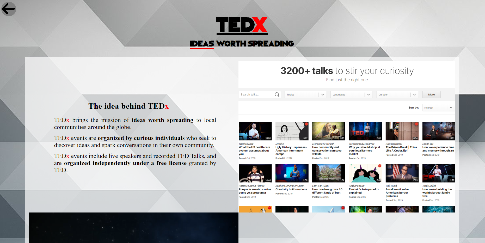
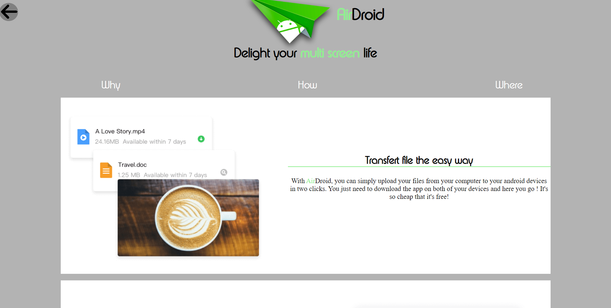

My favorite app est le second plus gros projet de cette première projectPool. Il est composé de 4 pages HTML et CSS qui décrivent (et vendent) 3 de mes applications favorites soit tedX, AirDroid, Soundcloud. Ce projet m'as bien plus malgrès le manque d'inspiration croissant visible dans les pages (surtout soundcloud :o)

Mon application favorite est de très loin tedX mais il falait en choisir trois alors, simple comme je suis, j'ai décidé de prendre de la musique et du transfer de fichier. Donmaine assez évasif pour ne pas trop en dire sur moi et qui,tout de même dénote un certain type de personnalité (ref au projet favorite app avec Instagram/Twitter/Facebook)
 AirDroid ne peut pas être mon application favorite mais je le préfère à d'autre applis plus ""sociales"" tels facebook ou snapchat.